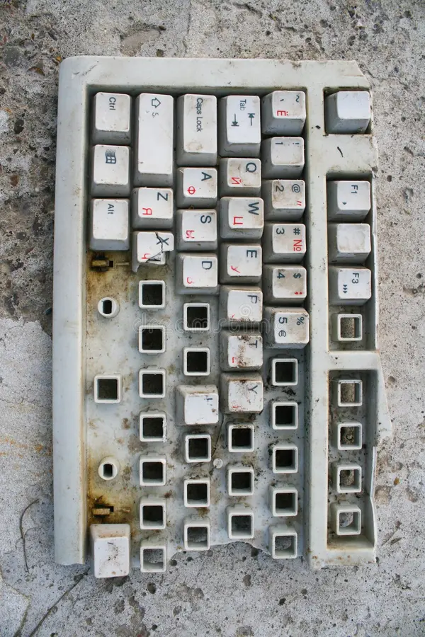
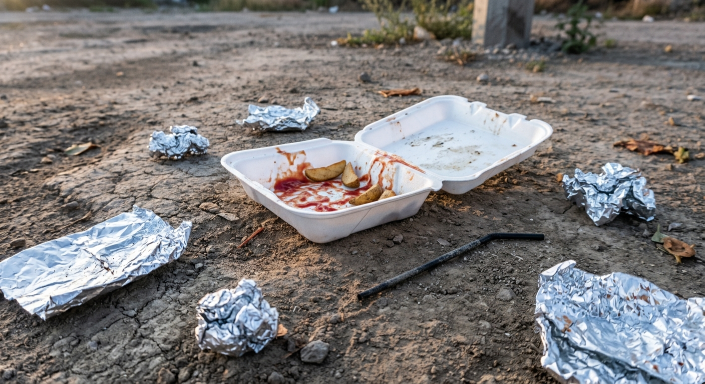

Volver a la página anterior Ir a la Portada Siguiente página: En nuestra comunidad
En nuestra preparatoria los desechos que más salen a diario son botellas de plástico (PET), latas de refresco o bebidas energéticas, envolturas de papitas y galletas o servilletas usadas. También se acumula bastante papel de libretas, hojas impresas de trabajos escolares y restos de comida o cáscaras de fruta del desayuno. Además, por las especialidades técnicas de los talleres y laboratorios, llegan a salir residuos electrónicos, cables o envases de materiales específicos.

La mayor cantidad de basura se concentra en la cafetería o cooperativa escolar y en las mesas y bancas cercanas a ella, sobre todo durante y justo después del receso. Otros puntos donde se junta mucho desecho son las canchas deportivas, las jardineras de los patios centrales, los pasillos exteriores y los alrededores de los salones al terminar el turno.

El problema principal es que toda la basura se revuelve en los mismos botes porque faltan contenedores bien señalizados para separar lo reciclable de lo orgánico. Esto hace que el papel o el cartón se ensucien con restos de comida y ya no sirvan para reciclarse. A esto se suma que muchos botes se desbordan en las horas pico, falta costumbre en parte de los alumnos para llevar sus desechos hasta el contenedor y en ocasiones el viento termina regando las envolturas y botellas por todo el plantel.